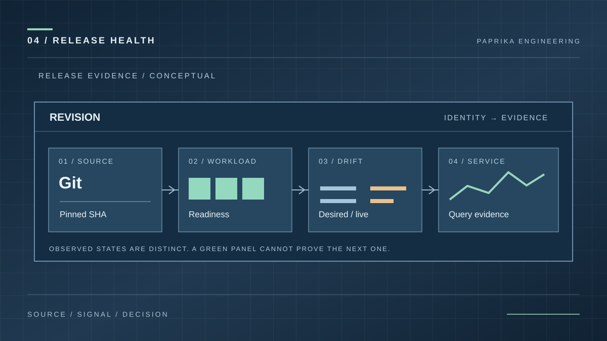
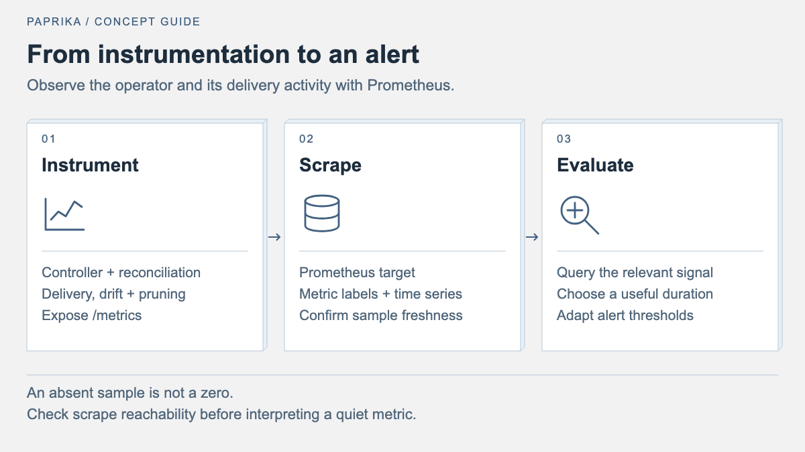
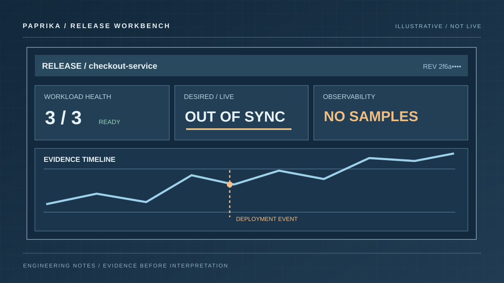

Kubernetes release dashboards: the signals that matter before and after a rollout
Choose useful Kubernetes release dashboard signals: revision identity, workload health, desired-state drift, Prometheus metrics and evidence freshness.

A release dashboard should answer an operational question: is the new revision reaching its intended workloads, and can we trust the evidence? A grid of green charts does not answer that by itself. A Kubernetes Deployment can be available while its live configuration differs from Git; an Application can be synced while its pods fail readiness checks.


Start with the release identity and deployment target. Then put desired-state comparison, workload health, control-plane progress and application telemetry alongside it. Paprika models those concerns separately through Applications, Releases and Stages; the concepts guide explains the resource relationships, and the health and drift article explains why the two status dimensions must not be collapsed.
Start with the question, not the widget
A useful first screen has four distinct rows of evidence:
| Question | Signal to inspect | Useful visual | What it cannot establish |
|---|---|---|---|
| Which revision is selected? | Application and Release identity, target Stage | Revision and target detail | That a rollout completed |
| Does live state match intent? | Desired/live comparison and prune candidates | Status plus resource breakdown | That the workload is healthy |
| Are the workloads converging? | Resource conditions and readiness | Status timeline and affected resources | That application requests succeed |
| Is the service behaving? | Provider-backed request, error and latency queries | Rates and time series | That the rollout itself is the cause |
Release evidence workbench
Select a deployment target. Compare readiness, drift and the evidence behind the status.
No observations for this example state. Check query and provider status.
max by (app, namespace) (paprika_out_of_sync)The example reports no drift for this selected target. Workload readiness remains a separate observation.
The interactive example above switches between three synthetic environment states. It demonstrates why "synced", "ready" and "provider data available" must remain separately visible.
Do not replace a missing reading with zero. A disconnected Prometheus provider, a stale metric sample, and a genuine value of zero are different situations. In the saved Insights dashboard, keep the selected time window, provider and query status visible; use query_dashboard to confirm the widgets receive their expected signals.
Put Paprika's own control-plane metrics to work
Paprika exposes documented metrics for drift and reconciliation. The following PromQL is illustrative and only returns data after the corresponding metrics have been scraped. Confirm metric and label availability against the metrics reference and your actual provider.
A count of out-of-sync resources by Application uses a gauge, not a counter:
max by (app, namespace) (paprika_out_of_sync)
A view of Applications whose controller is behind the declared generation uses:
max by (application, namespace) (
paprika_application_reconcile_lag
)
For apply errors, which are represented by a counter, use a rate over an explicit window:
sum by (app) (
rate(paprika_sync_errors_total[5m])
)
A positive error rate is evidence of recent failures, not an exact failure count. For a count over a window, increase(paprika_sync_errors_total[1h]) is more suitable. Neither expression diagnoses the underlying problem; the next action is to inspect the affected Application, Release, events and logs.
An empty series can mean the target was never scraped. Check scrape health, provider permissions, available labels and sampling freshness before making a release decision from the panel.

Illustrative dashboard composition. The source revision, readiness, drift and telemetry cards communicate different facts; these are not production values.
Separate delivery progress from service health
A production candidate needs both delivery evidence and service evidence. A successful render or apply operation does not show that users can complete requests. Conversely, an apparently healthy workload does not prove the intended source revision was deployed.
For staged promotion, use the same immutable commit as the reference point while retaining each environment's own configuration. Paprika's environment promotion guide distinguishes selected candidate, verification and approval. A dashboard can place those events on a timeline without pretending they are interchangeable.
For a canary, show the configured step, current workload convergence and whichever analysis signals are actually available. A configured ten-percent traffic weight is an intent, not proof that ten percent of real requests reached the candidate. The canary guide describes the rollout gates and their limits.
Design for the next decision
Above the fold, prefer a revision identifier, deployment target, release phase and a small set of genuine exceptions. Put exploration underneath:
- The selected revision and its release record, without truncating away the differentiating commit characters.
- Drift and workload status, with the affected resource linked or identifiable.
- Time-series evidence around the deployment window, including units and timestamps.
- A clear route to the underlying query, logs or traces when a chart is abnormal.
Use a fixed pre/post window when comparing a release with its predecessor. A graph whose time range silently changes when you select a new service is difficult to compare. Keep selectors connected to the saved-query parameters, not merely drawn above the charts.
If the environment uses several clusters, preserve the cluster dimension. Aggregating unlike clusters into a single apparently healthy total can obscure a failed deployment in a smaller target. For a cluster-specific incident, drill down before summing anything.
Verify the dashboard before relying on it
Read back the saved document and run query_dashboard with an explicit service and time range. Inspect signal states, returned timestamps and query errors. In the browser, check a narrower viewport, keyboard navigation, legend clipping and tooltip placement. A successful JSON save is not a successful monitoring dashboard.
Paprika's public chart and dashboard showcase uses synthetic data deliberately; it demonstrates presentation, not production release health. The dashboard examples guide explains how to map an example's placeholder queries to real connected providers.
For a hands-on example, open the actual chart renderer below. The gallery uses labelled synthetic fixture data, not a live cluster.
For the next design step, read Prometheus dashboard query patterns and the dashboard layout checklist. Together they turn the same operational questions into defensible queries and readable panels.